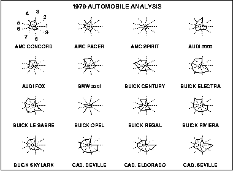

|
1.
Exploratory Data Analysis
1.3. EDA Techniques 1.3.3. Graphical Techniques: Alphabetic
|
|||
|
Purpose: Display Multivariate Data |
The star plot
(Chambers 1983)
is a method of displaying multivariate data.
Each star represents a single observation. Typically,
star plots are generated in a multi-plot format with
many stars on each page and each star representing one
observation.
Star plots are used to examine the relative values for a single data point (e.g., point 3 is large for variables 2 and 4, small for variables 1, 3, 5, and 6) and to locate similar points or dissimilar points. |
||
| Sample Plot |
The plot below contains the star plots of 16 cars. The
data file actually contains 74 cars, but we restrict the
plot to what can reasonably be shown on one page.
The variable list for the sample star plot is
 We can look at these plots individually or we can use them to identify clusters of cars with similar features. For example, we can look at the star plot of the Cadillac Seville and see that it is one of the most expensive cars, gets below average (but not among the worst) gas mileage, has an average repair record, and has average-to-above-average roominess and size. We can then compare the Cadillac models (the last three plots) with the AMC models (the first three plots). This comparison shows distinct patterns. The AMC models tend to be inexpensive, have below average gas mileage, and are small in both height and weight and in roominess. The Cadillac models are expensive, have poor gas mileage, and are large in both size and roominess. |
||
| Definition | The star plot consists of a sequence of equi-angular spokes, called radii, with each spoke representing one of the variables. The data length of a spoke is proportional to the magnitude of the variable for the data point relative to the maximum magnitude of the variable across all data points. A line is drawn connecting the data values for each spoke. This gives the plot a star-like appearance and the origin of the name of this plot. | ||
| Questions |
The star plot can be used to answer the following questions:
|
||
| Weakness in Technique |
Star plots are helpful for small-to-moderate-sized
multivariate data sets. Their primary weakness is that
their effectiveness is limited to data sets with less than
a few hundred points. After that, they tend to be
overwhelming.
Graphical techniques suited for large data sets are discussed by Scott. |
||
| Related Techniques | Alternative ways to plot multivariate data are discussed in Chambers, du Toit, and Everitt. | ||
| Software | Star plots are available in some general purpose statistical software progams. | ||